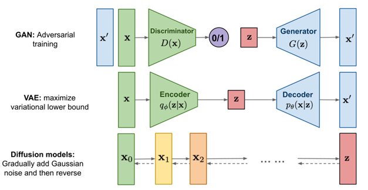
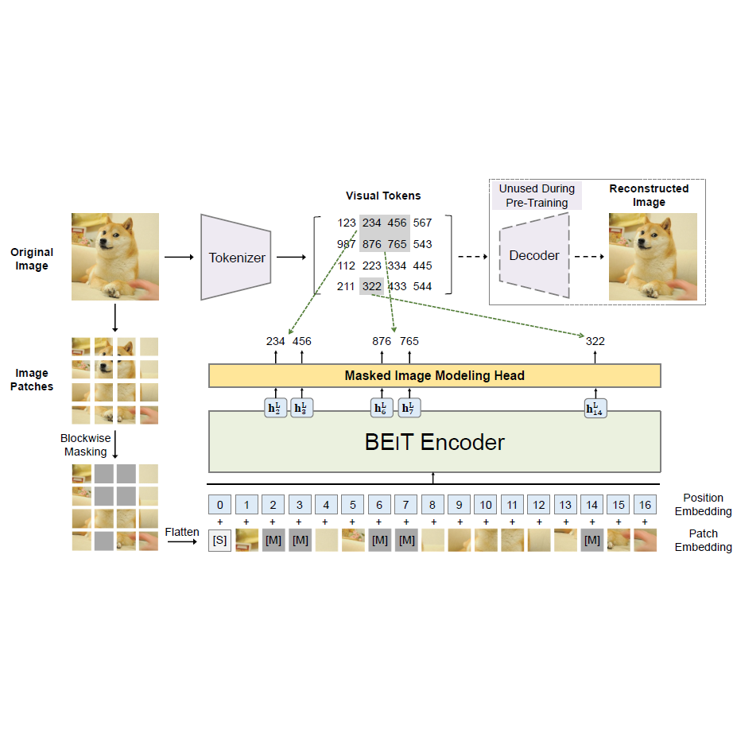
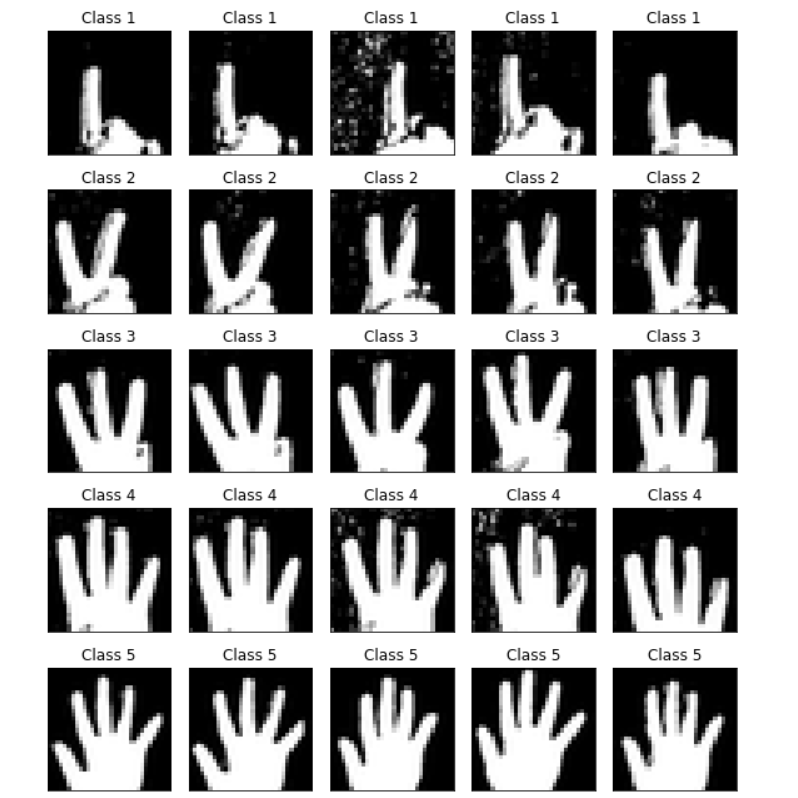

Greetings! I am a Ph.D. student at The University of Melbourne, working within the ADM+S Centre of Excellence for Automated Decision-Making and Society. My research focuses on distributional robustness in vision-language models, supervised by Prof. Christopher Leckie and Dr. Sarah Erfani.
My thesis investigates theoretical aspects and scalable methods to enhance out-of-distribution (OOD) generalization in contrastive methods and foundation vision-language models. My broader research interests encompass trustworthy machine learning, with particular emphasis on distributional and adversarial robustness, deep generative models, computational biology, and self-supervised learning.
4
Citations
1
h-index
7
Publications
Selected Publications
Integrating multi-covariate disentanglement with counterfactual analysis on synthetic data enables cell type discovery and counterfactual predictions
S Megas, A Amani, A Rose, O Dufva, K Shamsaie, H Asadollahzadeh, K Polanski, M Haniffa, SA Teichmann, M Lotfollahi
bioRxiv preprint, 2025
Exploiting What Trained Models Learn for Making Them Robust to Spurious Correlations without Group Annotations
M Ghaznavi, H Asadollahzadeh, FH Noohdani, SV Tabar, H Hasani, T Akbari Alvanagh, MH Rohban, MS Baghshah
Workshop on Spurious Correlation and Shortcut Learning: Foundations and Solutions, ICLR 2025
Trained Models Tell Us How to Make Them Robust to Spurious Correlation without Group Annotation
M Ghaznavi, H Asadollahzadeh, FH Noohdani, SV Tabar, H Hasani, MS Baghshah, MH Rohban
arXiv preprint arXiv:2410.05345, 2024
Annotation-Free Group Robustness via Loss-Based Resampling
M Ghaznavi, H Asadollahzadeh, HRY Araghi, FH Noohdani, MH Rohban, MS Baghshah
arXiv preprint arXiv:2312.04893, 2023
Disentangling Covariates to Predict Counterfactuals for Single-cell Data
K Shamsaie, S Megas, H Asadollahzadeh, SA Teichmann, M Lotfollahi
2023
Sequence-to-sequence modeling for Temporal Reconstruction of Cellular Events
A Vahidi, K Ly, H Asadollahzadeh, M Moullet, V Baskar, E Stephenson, M Lotfollahi
2024
News
[06/2025] Our paper "
Integrating multi-covariate disentanglement with counterfactual analysis on synthetic data enables cell type discovery and counterfactual predictions" is now available on
bioRxiv.
[02/2025] Started my Ph.D. journey at The University of Melbourne as part of the ADM+S Centre of Excellence, focusing on distributional robustness in vision-language models.
[01/2025] Excited to announce that our workshop proposal "Workshop on Spurious Correlation and Shortcut Learning: Foundations and Solutions" has been accepted for ICLR 2025! 🎉
[10/2024] Our paper "
Trained Models Tell Us How to Make Them Robust to Spurious Correlation without Group Annotation" is now available on
arXiv.
[12/2023] Our pre-print "
Annotation-Free Group Robustness via Loss-Based Resampling" is now public at
arXiv [
Poster].
[09/2023] Thrilled to share that the following papers have been accepted to
ICCV 2023 -
OOD Generalization in Computer Vision Workshop🎉:
- Data-Driven Annotation-Free Group Robustness Across Extremely Unbalanced Group Sizes
Ghaznavi M., Asadollahzadeh H., Yaghoubi H., Hosseini F., Rohban M., Soleymani M.
Paper, Slides
- Evaluating Robustness of Pre-Trained Deep Neural Networks Against Spurious Correlations
Taherkhani M., Hoseinpour A., Hosseini F., Asadollahzadeh H., Soleymani M.
Paper, Slides
Selected Talks

Deep Generative Models, Pushing the Limits of Creativity
May 24, 2023
Selected Projects (Full List)

Transformers, BERT, and BEIT
BERT: Pre-training of Deep Bidirectional Transformers for Language Understanding,
BEIT: BERT Pre-Training of Image Transformers,
Neural Networks & Deep Learning,
Dr. Ahmad Kalhor,
Autumn 2022

Generative Adversarial Networks (DCGAN, AC-GAN, Wasserstein Loss, and WGAN)
Unsupervised Representation Learning with Deep Convolutional Generative Adversarial Networks,
Conditional Image Synthesis With Auxiliary Classifier GANs,
Wasserstein GAN (WGANs) (Arjovsky et al. 2017),
Neural Networks & Deep Learning,
Dr. Ahmad Kalhor,
Autumn 2022